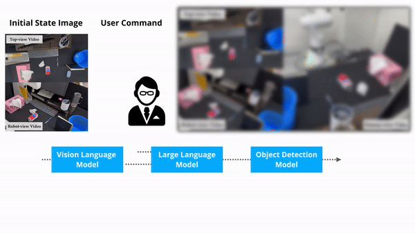

|
Jinwoo Park I am a Master's student, advised by Prof. Honguk Woo, in CSI Lab at Sungkyunkwan University, Seoul, South Korea. I completed my B.S. degree in Mathematics and Computer Science (double major) at the same university. I am currently working at Diden Robotics and previously interned at Samsung Electronics in DIT Center CSE team. CV / GitHub / Google Scholar / Email |
News
|
ResearchMy research focuses on enabling robots to perform complex reasoning, including both inductive and deductive reasoning tasks. My passion is to develop artificial intelligence systems that can emulate human-like reasoning capabilities in robotic applications. |
Publications |
|
NESYC: A Neuro-Symbolic Continual Learner for Complex Embodied Tasks in Open Domains
Wonje Choi*, Jinwoo Park*, Sanghyun Ahn, Daehee Lee, Honguk Woo International Conference on Learning Representations (ICLR), 2025 (Under Review) * Equal Contribution paper / project page |
|

|
Risk-Conditioned Reinforcement Learning: A Generalized Approach for Adapting to Varying Risk Measures
Gwangpyo Yoo, Jinwoo Park, Honguk Woo AAAI Conference on Artificial Intelligence (AAAI), 2024 paper / code |
Team Projects |
|
|
|
Discussion-Korea Project
Jinwoo Park*, Seok Kim, Chan Woo Park, Chung Soo Lee, Chae Yun Jang, Hyung Joon Koo * Team leader Development of a Fair Discussion App Platform with an AI Moderator. Awards & Recognition:
|
Presentations |
|
|  |
ITRC Human Resources Development Competition Project
Jinwoo Park, Sanghyun Ahn, Seunghwan Jeong Demonstration of Laboratory Research and Projects with Real-world Robots video1 / video2 / video3 |
|
Website template adapted from Jon Barron. |